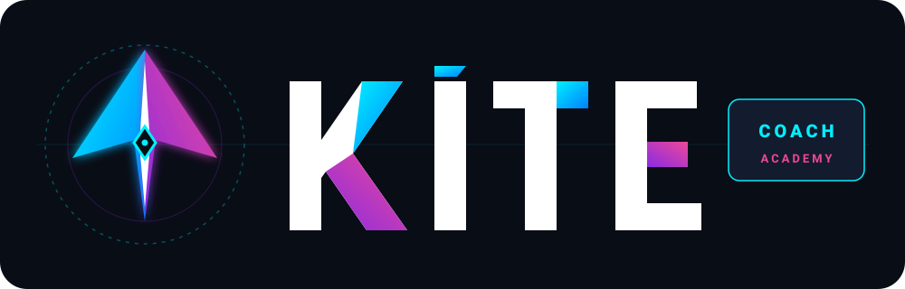
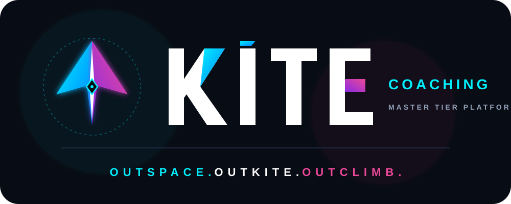
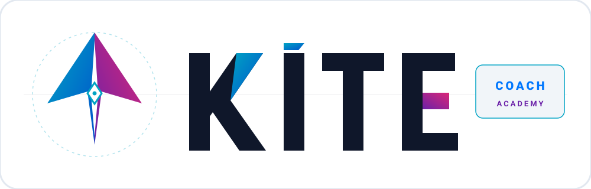
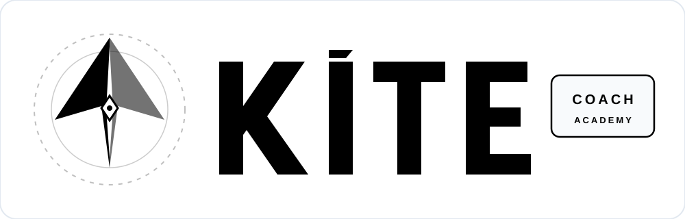
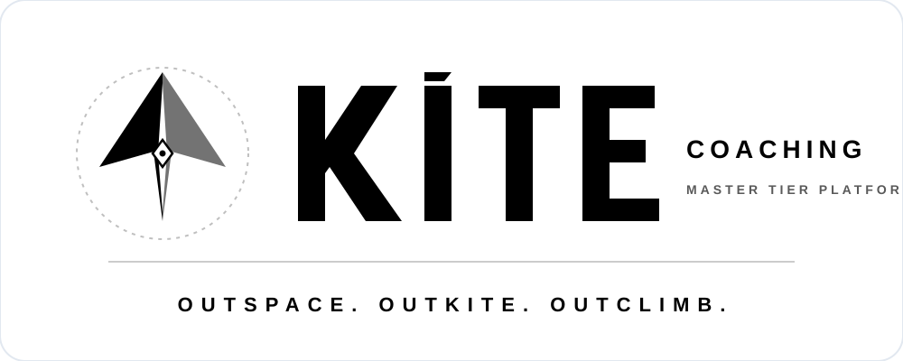
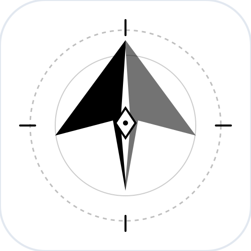
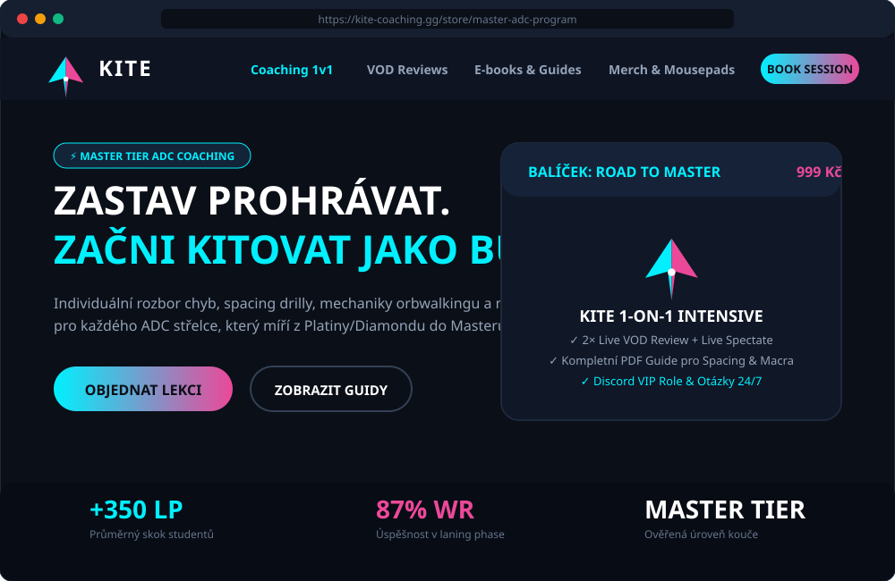
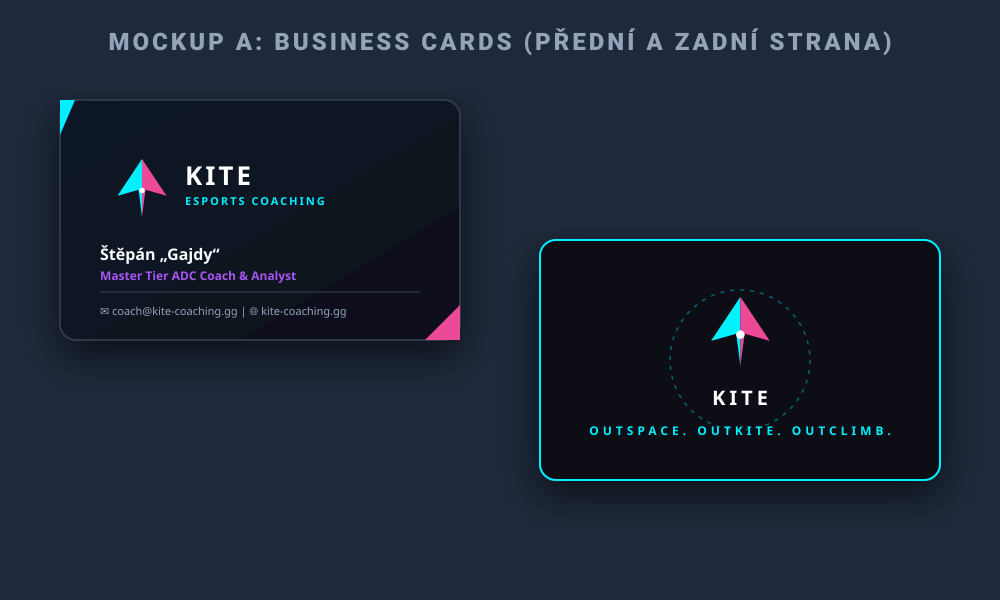
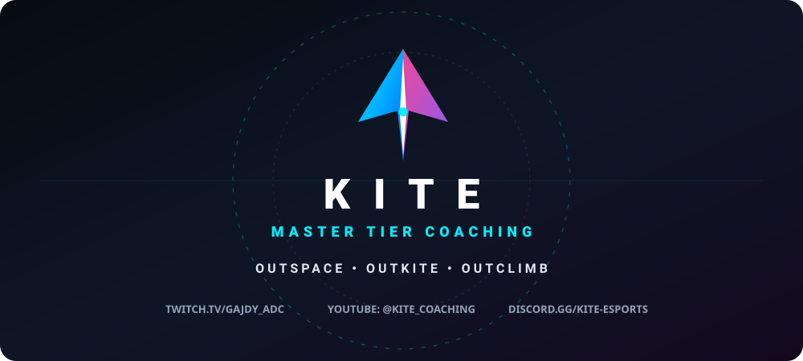
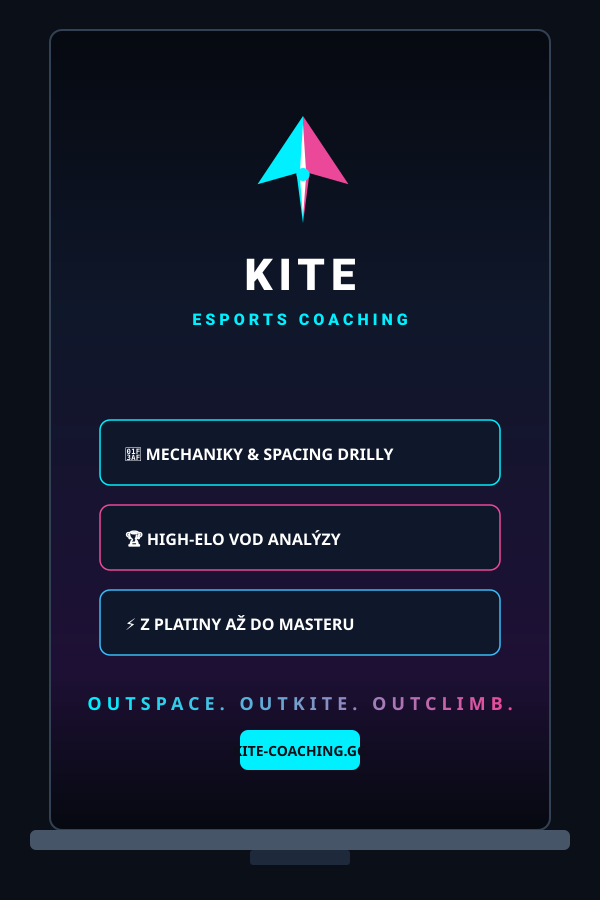

Kompletní vizuální identita a podklady do Canvy pro League of Legends Master-tier coaching platformu
Název KITE přímo vychází ze stěžejní mechaniky League of Legends – kiting / orbwalking / stutter-stepping (schopnost útočit na maximální range a plynule se pohybovat mezi jednotlivými auto-attacky). Zároveň evokuje rychlost, aerodynamiku a vzdušnou dominanci dravce.
Založeno na ikoně "A-click" zaměřovače a kružnici maximálního dosahu (Attack Range). Čistě technické, analytické.
Geometrický kosočtverec ve tvaru draka (kite) / stealth letounu. Reprezentuje pohyb vpřed, rychlé úskoky a reflexy.
Fúze křídla a zaměřovače: Dvě dynamická aerodynamická křídla s kinetickým jádrem v attack-range kružnici. Symbolizuje perfektní spacing.
Symbolizuje high-tech přesnost, rychlost reflexů a elektrizující energii.
Odkaz na prestižní fialový odznak Master Tier v League of Legends.
Hluboká esportová černá pro maximální kontrast a prémiový dark-mode styl.
Použití pro vizitky, světlé mockupy a vysokou čitelnost typografie.
CTA tlačítka, akční prvky, energetický gradient k Master fialové.
Vyvážený neutrální tón pro podnadpisy, popisky a doplňující data.

Uloženo jako: brand_kite/kite_logo_primary.svg

Heslo: OUTSPACE. OUTKITE. OUTCLIMB.

Optimalizované tmavé fonty (#0F172A) a sytější gradienty pro tisk.
Plné neonové vyznění (Electric Cyan & Master Violet).

brand_kite/kite_logo_monochrome_on_white.svg

brand_kite/kite_logo_monochrome_with_slogan_on_white.svg

brand_kite/kite_logo_icon_monochrome_on_white.svg




.svg ze složky brand_kite. Canva nativně podporuje SVG – můžete v ní dokonce přímo měnit barvy jednotlivých křivek loga!